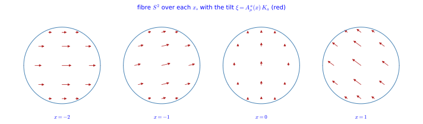
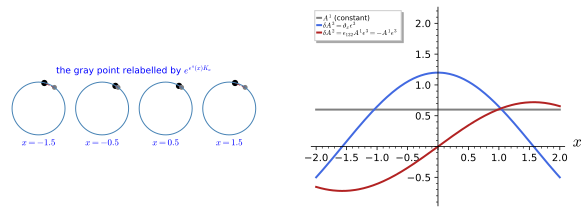

Isometries and gauge fields
Kaluza’s fifth dimension produced one gauge field, the photon, because the circle has one symmetry: the rotation generated by the Killing vector \partial_y (Part III, Gauge invariance from the fifth dimension). The Standard Model needs twelve gauge fields and three non-commuting gauge groups, and the natural question, first asked by DeWitt, is whether a larger internal space with a larger symmetry group can produce them all from geometry. This chapter answers the first half of the question. Replacing the circle by an internal space with a non-abelian group of isometries, the sphere S^2 with its three rotations being the running example, the off-diagonal components of the metric become one gauge field per Killing vector, and the coordinate changes along the Killing vectors become Yang-Mills gauge transformations whose structure constants are those of the isometry algebra.
The chapter has two sections. The first, on the ansatz, recalls the Killing vectors of the internal space (Part I, Flows and Killing vectors), writes the non-abelian Kaluza-Klein ansatz on M_4 \times M_k and inverts it; the inverse is a statement about block matrices that holds for every internal space at once. The second derives the gauge transformation from the Lie derivative of the metric along spacetime-dependent isometries and identifies the gauge algebra with the opposite of the Killing algebra, the Lie algebra of the isometry group of Lie groups and Lie algebras. The geometric picture behind both is that of a fibre bundle with structure group G (Fibre bundles), and the sphere is the simplest coset space SO(3)/SO(2) of Coset spaces. The next chapter reduces the curvature scalar and meets the consistency problem. Every statement is followed by three examples and three exercises with hidden solutions.
Isometries as gauge symmetries: the ansatz
Replacing the circle by a sphere replaces the single Killing vector \partial_y by the three Killing vectors of SO(3), and the single gauge field by three: the gauge group of the reduced theory is the isometry group of the internal space. This section sets up the non-abelian Kaluza-Klein ansatz on M_4 \times S^2, the sphere of Part I as SO(3)/SO(2), following Duff (1994, sec. 5) and Overduin and Wesson (1997, sec. 4.3); its block inverse holds for an arbitrary internal space.
Internal isometries
The ansatz needs two ingredients from the internal space: a metric that fixes its size and shape, and the Killing vectors that generate its symmetries. The definition collects both and fixes the sign with which the internal metric enters the higher-dimensional metric of signature (+, -, \dots, -).
Definition 1 (Internal space with isometries) An internal space is a compact Riemannian manifold (M_k, \gamma) with positive-definite metric \gamma_{mn}(y) and a group G of isometries generated by Killing vectors K_a = K^m_a\partial_m (Definition 77 of Differential geometry), a = 1, \dots, \dim G, closing into the Lie algebra of G, [K_a, K_b] = f_{ab}{}^cK_c (Definition 78 of Differential geometry). The compactification is M_4 \times M_k, and the Kaluza-Klein ansatz couples the Killing vectors to gauge fields on M_4. Inside the full metric the internal block is h_{mn} = -\gamma_{mn}, so that \hat g has signature (+, -, \dots, -) (Coordinates, indices and signature); the geometry of M_k itself, its Killing vectors and its curvature R_\gamma, is that of the positive metric \gamma.
Veriphy. Pending.
Lean. Pending.
Sage. Pending.
The round two-sphere is the example the whole of this Part returns to. Its three Killing vectors were found in Part I, and their brackets fix the structure constants that will reappear in the gauge transformation.
Example 1 (The sphere) S^2 = SO(3)/SO(2) with the round metric d\theta^2 + \sin^2\theta\,d\varphi^2 and the three Killing vectors Equation 54 of Differential geometry, K_1 = -\sin\varphi\,\partial_\theta - \cot\theta\cos\varphi\,\partial_\varphi, K_2 = \cos\varphi\,\partial_\theta - \cot\theta\sin\varphi\,\partial_\varphi, K_3 = \partial_\varphi, with [K_a, K_b] = -\epsilon_{abc}K_c (Equation 56 of Differential geometry, Proposition 31 of Differential geometry): f_{ab}{}^c = -\epsilon_{abc}, the algebra \mathfrak{so}(3) (Exercise 1).
The circle of Part III is the degenerate case with a one-dimensional abelian isometry group. Keeping it in view checks every formula of this chapter, because each must reduce to its Part III counterpart.
Example 2 (The circle) S^1 with \gamma = \phi^2 (h = -\phi^2) and the single Killing vector K = \partial_y, f = 0: the ansatz of Five-dimensional gravity and the Kaluza-Klein ansatz is the case \dim G = 1, and every formula below reduces to Part III when K^m_a = 1.
Flat tori and group manifolds show that the number of Killing vectors is not tied to the dimension of the space. A torus has as many as dimensions, a group manifold twice as many, and a coset as many as the group that acts on it.
Example 3 (Tori and group manifolds) T^k has the k commuting Killing vectors \partial_{y^m} and gauge group U(1)^k; a group manifold G has 2\dim G Killing vectors, the left- and right-invariant fields of Maurer-Cartan forms, and gauge group G \times G; a coset G/H has the \dim G Killing vectors of G acting on the left (Duff 1994, 14). The number of gauge fields is \dim G, not the number of internal dimensions.

figures/s2_gauge_fields.sage.
Interactive figure (drag to rotate or zoom); the static version is above.
The first exercise recomputes the brackets and inner products of the sphere’s Killing vectors in the chart. It is the input for every later computation on M_4 \times S^2, so it is worth checking once by machine.
Exercise 1 (The Killing algebra of the sphere) Verify the brackets and the inner products of the three Killing vectors with Sage.
th, ph = var("th ph")
K = [vector([-sin(ph), -cot(th) * cos(ph)]), vector([cos(ph), -cot(th) * sin(ph)]), vector([0, 1])]
n = vector([sin(th) * cos(ph), sin(th) * sin(ph), cos(th)])
def lc(a, b, c): return Permutation([a + 1, b + 1, c + 1]).sign() if len({a, b, c}) == 3 else 0
def bracket(U, V): return vector([sum(U[k] * diff(V[m], [th, ph][k]) - V[k] * diff(U[m], [th, ph][k]) for k in range(2)) for m in range(2)])
print("[K_1, K_2] =", bracket(K[0], K[1]).apply_map(lambda e: e.simplify_full()), " and -K_3 =", -K[2])
print("[PASS] [K_a, K_b] = -eps_abc K_c:", all((bracket(K[a], K[b]) + sum(lc(a, b, c) * K[c] for c in range(3))).apply_map(lambda e: e.simplify_full()).is_zero() for a in range(3) for b in range(3)))
h = diagonal_matrix([1, sin(th)^2])
G = matrix(SR, 3, 3, lambda a, b: (K[a] * h * K[b]).simplify_full())
print("K_a . K_b ="); print(G)
print("[PASS] K_a . K_b = delta_ab - n_a n_b:", (G - (identity_matrix(3) - n.column() * n.row())).apply_map(lambda e: e.simplify_full()).is_zero())
print("[PASS] the Killing vectors are tangent to the sphere and the matrix K_a . K_b has rank 2 (one combination, n^a K_a, vanishes at each point):", G.rank() == 2 and (sum(n[a] * K[a] for a in range(3))).apply_map(lambda e: e.simplify_full()).is_zero())Output:
[K_1, K_2] = (0, -1) and -K_3 = (0, -1)
[PASS] [K_a, K_b] = -eps_abc K_c: True
K_a . K_b =
[cos(ph)^2*cos(th)^2 + sin(ph)^2 -cos(ph)*sin(ph)*sin(th)^2 -cos(ph)*cos(th)*sin(th)]
[ -cos(ph)*sin(ph)*sin(th)^2 cos(th)^2*sin(ph)^2 + cos(ph)^2 -cos(th)*sin(ph)*sin(th)]
[ -cos(ph)*cos(th)*sin(th) -cos(th)*sin(ph)*sin(th) sin(th)^2]
[PASS] K_a . K_b = delta_ab - n_a n_b: True
[PASS] the Killing vectors are tangent to the sphere and the matrix K_a . K_b has rank 2 (one combination, n^a K_a, vanishes at each point): True
sage sage/exercises/$e.sage 4.14s user 0.50s system 63% cpu 7.298 totalIn the chart the Killing vectors look complicated, but in the ambient space they are the familiar rotation fields. The second exercise pushes them forward to \mathbb{R}^3, as in the interactive figure, and rederives the brackets from the cross product.
Exercise 2 (The Killing vectors in \mathbb{R}^3) Show that the push-forward of K_a by the embedding \vec n(\theta, \varphi) is \vec e_a \times \vec n. Writing \vec e_a \times \vec x = L_a\vec x with (L_a)_{bc} = -\epsilon_{abc}, use the bracket of linear vector fields, [L\vec x, M\vec x] = (ML - LM)\vec x, to rederive [K_a, K_b] = -\epsilon_{abc}K_c, and compute (\vec e_a \times \vec n) \cdot (\vec e_b \times \vec n).
For K_3 = \partial_\varphi the push-forward is \partial_\varphi\vec n = (-\sin\theta\sin\varphi, \sin\theta\cos\varphi, 0) = \vec e_3 \times \vec n; the other two follow in the same way. For linear fields X = L\vec x, Y = M\vec x, the bracket X^j\partial_jY - Y^j\partial_jX is ML\vec x - LM\vec x; since [L_a, L_b] = \epsilon_{abc}L_c as matrices, the fields have the opposite bracket -\epsilon_{abc}, the sign that runs through this chapter. Finally (\vec e_a \times \vec n)\cdot(\vec e_b \times \vec n) = \delta_{ab}(\vec n\cdot\vec n) - n_an_b = \delta_{ab} - n_an_b:
th, ph = var("th ph")
K = [vector([-sin(ph), -cot(th) * cos(ph)]), vector([cos(ph), -cot(th) * sin(ph)]), vector([0, 1])]
n = vector([sin(th) * cos(ph), sin(th) * sin(ph), cos(th)])
J = matrix(SR, 3, 2, lambda i, m: diff(n[i], [th, ph][m])) # columns d n / d th, d n / d ph
e = identity_matrix(SR, 3).columns()
push = [(J * K[a]).simplify_full() for a in range(3)]
for a in range(3): print("push-forward of K_%d:" % (a + 1), push[a], " e_%d x n:" % (a + 1), e[a].cross_product(n))
print("[PASS] the push-forward of K_a is e_a x n:", all((push[a] - e[a].cross_product(n)).simplify_full().is_zero() for a in range(3)))
# linear vector fields on R^3: X_a(x) = e_a x x = L_a x with the matrices (L_a)_{bc} = -eps_abc
x = vector(var("x1 x2 x3"))
def lc(a, b, c): return Permutation([a + 1, b + 1, c + 1]).sign() if len({a, b, c}) == 3 else 0
L = [matrix(QQ, 3, 3, lambda b, c: -lc(a, b, c)) for a in range(3)]
print("[PASS] e_a x x = L_a x with (L_a)_{bc} = -eps_abc:", all((L[a] * x - e[a].cross_product(x)).is_zero() for a in range(3)))
# for linear fields X = L x, Y = M x the vector-field bracket is [X, Y] = (M L - L M) x
br = lambda P, Q: Q * P - P * Q
print("[PASS] [X_a, X_b] = (L_b L_a - L_a L_b) x = -eps_abc X_c:", all(br(L[a], L[b]) == -sum(lc(a, b, c) * L[c] for c in range(3)) for a in range(3) for b in range(3)))
G = matrix(SR, 3, 3, lambda a, b: (e[a].cross_product(n) * e[b].cross_product(n)).simplify_full())
print("[PASS] (e_a x n).(e_b x n) = delta_ab - n_a n_b:", (G - (identity_matrix(3) - n.column() * n.row())).apply_map(lambda t: t.simplify_full()).is_zero())Output:
push-forward of K_1: (0, -cos(th), sin(ph)*sin(th)) e_1 x n: (0, -cos(th), sin(ph)*sin(th))
push-forward of K_2: (cos(th), 0, -cos(ph)*sin(th)) e_2 x n: (cos(th), 0, -cos(ph)*sin(th))
push-forward of K_3: (-sin(ph)*sin(th), cos(ph)*sin(th), 0) e_3 x n: (-sin(ph)*sin(th), cos(ph)*sin(th), 0)
[PASS] the push-forward of K_a is e_a x n: True
[PASS] e_a x x = L_a x with (L_a)_{bc} = -eps_abc: True
[PASS] [X_a, X_b] = (L_b L_a - L_a L_b) x = -eps_abc X_c: True
[PASS] (e_a x n).(e_b x n) = delta_ab - n_a n_b: TrueThe number of gauge fields depends on the isometry group, not on the dimension. The third exercise makes the comparison for the internal spaces met so far and for the three-sphere in two of its guises.
Exercise 3 (Counting) For the internal spaces S^1, T^2, S^2, S^3 = SU(2) and S^3 = SO(4)/SO(3), give the number of internal dimensions and the number of gauge fields.
S^1: 1 dimension, 1 gauge field (U(1)); T^2: 2 and 2 (U(1)^2); S^2 = SO(3)/SO(2): 2 and 3 (SO(3)); S^3 as the group manifold SU(2): 3 dimensions and 6 gauge fields (SU(2) \times SU(2), the left and right actions); S^3 = SO(4)/SO(3): 3 and 6, the same space and the same isometry group SO(4) \cong (SU(2) \times SU(2))/\mathbb{Z}_2 (Example 5 of Homogeneous spaces and fibre bundles). The gauge group is the isometry group, whose dimension can exceed that of the space (Duff 1994, 14).
The ansatz
With the Killing vectors in hand, the circle ansatz generalises by replacing A_\mu\,dx^\mu in dy + A_\mu dx^\mu by the vector-valued one-form K^m_aA^a_\mu dx^\mu. The internal metric stays fixed, so that the only new fields are the gauge fields, one for each Killing vector.
Definition 2 (Non-abelian Kaluza-Klein ansatz) The non-abelian ansatz on M_4 \times M_k is d\hat s^2 = g_{\mu\nu}(x)\,dx^\mu dx^\nu - \gamma_{mn}(y)\left(dy^m + K^m_a(y)A^a_\mu(x)\,dx^\mu\right)\left(dy^n + K^n_b(y)A^b_\nu(x)\,dx^\nu\right), \tag{1} with components \hat g_{\mu\nu} = g_{\mu\nu} - \gamma_{mn}K^m_aK^n_bA^a_\mu A^b_\nu, \hat g_{\mu m} = -\gamma_{mn}K^n_aA^a_\mu, \hat g_{mn} = -\gamma_{mn}, that is \hat g_{\mu\nu} = g_{\mu\nu} + h_{mn}K^m_aK^n_bA^a_\mu A^b_\nu, \hat g_{\mu m} = h_{mn}K^n_aA^a_\mu, \hat g_{mn} = h_{mn} in terms of the internal block h = -\gamma (Duff 1994, eq. 27, with the signature converted; Overduin and Wesson 1997, eq. 31): one gauge field A^a_\mu per Killing vector, the internal metric fixed, and no scalars (the generalisation with y-dependent internal metric brings in the scalar fields of The reduction of the curvature scalar, which Part V treats in its own way).
Veriphy. Pending.
Lean. Pending.
Sage. Pending.
On the sphere the mixed components can be written out from the three Killing vectors. They depend on the point of the sphere, unlike the circle’s -\phi^2A_\mu, and this dependence is what the next chapter has to cope with.
Example 4 (On the sphere) With Example 1, \hat g_{\mu\theta} = -K^\theta_aA^a_\mu = \sin\varphi A^1_\mu - \cos\varphi A^2_\mu and \hat g_{\mu\varphi} = -\sin^2\theta K^\varphi_aA^a_\mu = \sin\theta\cos\theta(\cos\varphi A^1_\mu + \sin\varphi A^2_\mu) - \sin^2\theta A^3_\mu: the three gauge fields enter through the three Killing vectors, with \varphi-dependent coefficients.
Collecting the products K^m_aA^a_\mu into a single matrix makes the structure of the ansatz plain. It is the block form of Part III with the corner promoted from a number to a k \times k matrix.
Example 5 (In block form) With B^m{}_\mu = K^m_aA^a_\mu and h = -\gamma the metric is \begin{pmatrix} g + B^ThB & B^Th \\ hB & h \end{pmatrix}, the block form of Example 4 of The Kaluza-Klein reduction with the 1 \times 1 corner -\phi^2 replaced by the k \times k internal block h and the column -\phi^2A by hB (Proposition 1).
The one-forms in the brackets of the ansatz have a geometric meaning. They single out a horizontal direction at each point of the product, which is the defining property of a connection on a bundle.
Example 6 (The tilt as a connection) The one-forms dy^m + K^m_aA^a_\mu dx^\mu vanish on the horizontal directions \partial_\mu - K^m_aA^a_\mu\partial_m: moving along x^\mu one is carried along the fibre by the isometry generated by A^a_\mu K_a (Figure 1), a connection on the bundle M_4 \times S^2 \to M_4 with structure group SO(3) (Definition 18 of Homogeneous spaces and fibre bundles), as A_\mu was a U(1) connection in Example 5 of Gauge theories.
The first exercise expands the line element on the sphere and reads off its components. It also checks the horizontal-vector statement of Example 6, which says that the four-dimensional metric is what remains along the horizontal directions.
Exercise 4 (Reading off the components) Expand Equation 1 on S^2 with symbolic g_{\mu\nu} and A^a_\mu (two spacetime dimensions suffice), compare with Example 4, and show that the horizontal vectors e_\mu = \partial_\mu - B^m{}_\mu\partial_m are orthogonal to the fibre with \hat g(e_\mu, e_\nu) = g_{\mu\nu}.
The components are half the second derivatives of d\hat s^2 with respect to the coordinate differentials. Since dy^m + B^m{}_\mu dx^\mu vanishes on e_\mu and the internal term is the only one that sees \partial_m, \hat g(e_\mu, \partial_m) = 0, and on e_\mu, e_\nu only g_{\mu\nu}dx^\mu dx^\nu survives:
th, ph = var("th ph")
K = [vector([-sin(ph), -cot(th) * cos(ph)]), vector([cos(ph), -cot(th) * sin(ph)]), vector([0, 1])]
gam = diagonal_matrix(SR, [1, sin(th)^2])
g = matrix(SR, [[var("g00"), var("g01")], [var("g01"), var("g11")]])
A = matrix(SR, 3, 2, lambda a, mu: var("A%d%d" % (a + 1, mu)))
B = matrix(SR, 2, 2, lambda m, mu: sum(K[a][m] * A[a, mu] for a in range(3))) # B^m_mu = K^m_a A^a_mu
dX = vector(var("dt dx dth dph"))
theta = vector([dX[2 + m] + sum(B[m, mu] * dX[mu] for mu in range(2)) for m in range(2)])
ds2 = (vector(dX[:2]) * g * vector(dX[:2]) - theta * gam * theta).expand()
G = matrix(SR, 4, 4, lambda i, j: (diff(ds2, dX[i], dX[j]) / 2).simplify_full()) # ds^2 = G_ij dX^i dX^j
print("ghat_{t th} =", G[0, 2].trig_reduce(), " ghat_{t ph} =", G[0, 3].simplify_trig())
print("[PASS] ghat_{mu th} = sin(ph) A^1_mu - cos(ph) A^2_mu:", all(bool((G[mu, 2] - (sin(ph) * A[0, mu] - cos(ph) * A[1, mu])).simplify_full() == 0) for mu in range(2)))
print("[PASS] ghat_{mu ph} = sin th cos th (cos ph A^1 + sin ph A^2) - sin^2 th A^3:", all(bool((G[mu, 3] - (sin(th) * cos(th) * (cos(ph) * A[0, mu] + sin(ph) * A[1, mu]) - sin(th)^2 * A[2, mu])).simplify_full() == 0) for mu in range(2)))
print("[PASS] ghat_{mn} = -gamma_{mn} and ghat_{mu nu} = g_{mu nu} - gamma_{mn} B^m_mu B^n_nu:", (G[2:, 2:] + gam).is_zero() and (G[:2, :2] - (g - B.transpose() * gam * B)).apply_map(lambda t: t.simplify_full()).is_zero())
E = [vector([1 if i == mu else 0 for i in range(2)] + [-B[0, mu], -B[1, mu]]) for mu in range(2)] # horizontal e_mu
V = [vector([0, 0, 1, 0]), vector([0, 0, 0, 1])] # vertical d_m
print("[PASS] the horizontal vectors e_mu = d_mu - B^m_mu d_m are orthogonal to the fibre:", all(bool((E[mu] * G * V[m]).simplify_full() == 0) for mu in range(2) for m in range(2)))
print("[PASS] ghat(e_mu, e_nu) = g_{mu nu}:", all(bool((E[mu] * G * E[nu] - g[mu, nu]).simplify_full() == 0) for mu in range(2) for nu in range(2)))Output:
ghat_{t th} = -A20*cos(ph) + A10*sin(ph) ghat_{t ph} = (A10*cos(ph) + A20*sin(ph))*cos(th)*sin(th) - A30*sin(th)^2
[PASS] ghat_{mu th} = sin(ph) A^1_mu - cos(ph) A^2_mu: True
[PASS] ghat_{mu ph} = sin th cos th (cos ph A^1 + sin ph A^2) - sin^2 th A^3: True
[PASS] ghat_{mn} = -gamma_{mn} and ghat_{mu nu} = g_{mu nu} - gamma_{mn} B^m_mu B^n_nu: True
[PASS] the horizontal vectors e_mu = d_mu - B^m_mu d_m are orthogonal to the fibre: True
[PASS] ghat(e_mu, e_nu) = g_{mu nu}: TrueThe ansatz must reduce to Part III for the circle. The second exercise checks the reduction component by component, including the sign of the internal block.
Exercise 5 (The circle limit) Take k = 1, \gamma = \phi^2 constant along the circle, one Killing vector K = \partial_y (K^y = 1) and one gauge field A^1_\mu = A_\mu. Show that Equation 1 becomes Equation 1 of The Kaluza-Klein reduction and its components Equation 2 of The Kaluza-Klein reduction.
B^y{}_\mu = K^yA_\mu = A_\mu, so d\hat s^2 = g_{\mu\nu}dx^\mu dx^\nu - \phi^2(dy + A_\mu dx^\mu)^2, which is Equation 1 of The Kaluza-Klein reduction. The components are \hat g_{\mu\nu} = g_{\mu\nu} - \phi^2A_\mu A_\nu, \hat g_{\mu y} = -\phi^2A_\mu and \hat g_{yy} = -\phi^2, those of Equation 2 of The Kaluza-Klein reduction; the internal block h = -\phi^2 is negative, as it must be for the signature (+, -, -, -, -). The only feature of Part III that the non-abelian ansatz drops is the x-dependence of \phi: here the internal metric is frozen.
At a single point of the sphere the three gauge fields cannot all be seen, because only two Killing-vector combinations are independent there. The third exercise shows that the full y-dependence nevertheless determines all three fields.
Exercise 6 (Recovering the gauge fields) Show that at the point \vec n of the sphere \hat g_{\mu m} does not change when A^a_\mu \to A^a_\mu + \lambda_\mu n^a, but that A^a_\mu = -\tfrac32\langle K^m_a\hat g_{\mu m}\rangle, the average over the sphere, recovers the gauge fields from the metric. Use K_a\cdot K_b = \delta_{ab} - n_an_b and \langle n_an_b\rangle = \tfrac13\delta_{ab}.
\hat g_{\mu m} = -\gamma_{mn}K^n_aA^a_\mu and n^aK_a = 0 at \vec n (Exercise 1), so the shift along n^a is invisible at that point. Contracting with K^m_b gives K^m_b\hat g_{\mu m} = -(K_b\cdot K_a)A^a_\mu = - (\delta_{ab} - n_an_b)A^a_\mu, whose average over the sphere is -(1 - \tfrac13)A^b_\mu = -\tfrac23A^b_\mu. Hence A^b_\mu = -\tfrac32\langle K^m_b\hat g_{\mu m}\rangle: the three gauge fields are encoded in how \hat g_{\mu m} varies over the sphere, not in its value at one point.
Inverting the ansatz is the first step of every curvature computation. The block structure makes the inverse as simple as in Part III, and the definition records it together with the determinant.
Definition 3 (Inverse of the non-abelian ansatz) The inverse of Equation 1 is \hat g^{\mu\nu} = g^{\mu\nu}, \qquad \hat g^{\mu m} = -g^{\mu\nu}B^m{}_\nu = -K^m_aA^{a\mu}, \qquad \hat g^{mn} = h^{mn} + B^m{}_\mu g^{\mu\nu}B^n{}_\nu = -\gamma^{mn} + B^m{}_\mu g^{\mu\nu}B^n{}_\nu , \tag{2} which reduces to Equation 3 of The Kaluza-Klein reduction for the circle (Proposition 1); as there, \det\hat g = \det g\det h = (-1)^k\det g\det\gamma, the mixing dropping out of the volume element \sqrt{|\hat g|} = \sqrt{-g}\sqrt{\gamma} (Exercise 7).
Veriphy. Pending.
Lean. Pending.
Sage. Pending.
The inverse formula uses nothing about the sphere or about Killing vectors. It is an identity of block matrices, and this is what makes a single proof cover every internal space.
Example 7 (For any blocks) The identity \hat g\hat g^{-1} = 1 is a statement about block matrices: it holds for any square matrices g, h with inverses and any rectangular B, whatever the dimensions. It is therefore proved once, for every internal space.
For the circle the formula must give back the inverse of Part III. The corner entry is the one to compare, because it is where the gauge field appears quadratically.
Example 8 (The circle again) For k = 1, h = -\phi^2 and B = A, the corner entry h^{-1} + Bg^{-1}B^T = -\phi^{-2} + A_\mu A^\mu of Equation 3 of The Kaluza-Klein reduction.
Veriphy. Pending.
Lean. KaluzaKlein.NonAbelianKK.ansatzInv_circle.
Sage. Pending.
On the sphere the blocks depend on the angles through the Killing vectors. The third example evaluates the identity there with fully symbolic gauge fields, together with the determinant.
Example 9 (On the sphere) With h = -\operatorname{diag}(1, \sin^2\theta), the three Killing vectors and symbolic A^a_\mu, multiplying out gives \hat g\hat g^{-1} = 1 and \det\hat g = \det g\det h = \det g\sin^2\theta (Exercise 7).
The first exercise is the Sage computation of Example 9. The block identity it tests on the sphere holds for all internal spaces at once (Proposition 1).
Exercise 7 (The block inverse on the sphere) Build Equation 1 on S^2 with symbolic A^a_\mu and check Equation 2 and the determinant.
th, ph = var("th ph")
K = [vector([-sin(ph), -cot(th) * cos(ph)]), vector([cos(ph), -cot(th) * sin(ph)]), vector([0, 1])]
h = -diagonal_matrix(SR, [1, sin(th)^2])
g = matrix(SR, [[var("g00"), var("g01")], [var("g01"), var("g11")]])
A = matrix(SR, 3, 2, lambda a, mu: var("A%d%d" % (a, mu)))
Kmat = matrix(SR, 2, 3, lambda m, a: K[a][m])
B = Kmat * A # B^m_mu = K^m_a A^a_mu
G = block_matrix([[g + B.transpose() * h * B, B.transpose() * h], [h * B, h]])
gi = g.inverse(); hi = h.inverse()
Ginv = block_matrix([[gi, -gi * B.transpose()], [-B * gi, hi + B * gi * B.transpose()]])
print("[PASS] G G^{-1} = 1 for the block inverse of the non-abelian ansatz:", (G * Ginv).apply_map(lambda e: e.simplify_full()) == identity_matrix(4))
print("[PASS] det G = det g det h (the mixing B drops out of the volume element):", bool((G.det() - g.det() * h.det()).simplify_full() == 0))Output:
[PASS] G G^{-1} = 1 for the block inverse of the non-abelian ansatz: True
[PASS] det G = det g det h (the mixing B drops out of the volume element): TrueVeriphy. Pending.
Lean.
/-- Also `G⁻¹ G = 1`, given `ginv g = 1` and `hinv h = 1`. -/
theorem inv_mul_ansatz (g ginv : Matrix μ μ ℝ) (h hinv : Matrix m m ℝ) (B : Matrix m μ ℝ)
(hg : ginv * g = 1) (hh : hinv * h = 1) :
ansatzInv ginv hinv B * ansatz g h B = 1KaluzaKlein.NonAbelianKK.inv_mul_ansatz in KaluzaKlein/NonAbelianKK/Ansatz.lean, namespace KaluzaKlein.NonAbelianKK
Sage. The solution above (Exercise 7).
At special points of the sphere the inverse can be written down by hand. The second exercise uses a point where one Killing vector vanishes, which shows how a gauge field can drop out locally.
Exercise 8 (The inverse at a point of the equator) At \theta = \pi/2, \varphi = 0 (the point \vec n = (1, 0, 0)) evaluate K_1, K_2, K_3, the matrix B^m{}_\mu and the internal block \hat g^{mn} of Equation 2. Which gauge field does not appear?
At \theta = \pi/2, \varphi = 0: \cot\theta = 0, so K_1 = -\sin 0\,\partial_\theta = 0, K_2 = \partial_\theta and K_3 = \partial_\varphi. Hence B^\theta{}_\mu = A^2_\mu and B^\varphi{}_\mu = A^3_\mu, and with \gamma = 1 at this point, \hat g^{\theta\theta} = -1 + A^2_\mu A^{2\mu}, \hat g^{\theta\varphi} = A^2_\mu A^{3\mu}, \hat g^{\varphi\varphi} = -1 + A^3_\mu A^{3\mu}, while \hat g^{\mu\theta} = -A^{2\mu}, \hat g^{\mu\varphi} = -A^{3\mu}. The field A^1, which rotates about the axis through this point, is absent: K_1 has a fixed point there.
The determinant formula controls the volume element and therefore the normalisation of every reduced action. The third exercise derives it by row operations, without inverting anything.
Exercise 9 (The volume element) Show \det\hat g = \det g\det h by subtracting B^T times the lower block rows from the upper ones, and deduce \int d^4x\,d^ky\sqrt{|\hat g|} = V_k\int d^4x\sqrt{-g} with V_k = \int d^ky\sqrt\gamma; evaluate V_2 for the unit sphere.
The row operation (upper rows) - B^T \times (lower rows) replaces \begin{pmatrix} g + B^ThB & B^Th \end{pmatrix} by \begin{pmatrix} g & 0 \end{pmatrix} and does not change the determinant; the result is block lower triangular with determinant \det g\det h. For h = -\gamma, \det h = (-1)^k\det\gamma, so |\det\hat g| = |\det g|\det\gamma and \sqrt{|\hat g|} = \sqrt{-g}\sqrt\gamma. The y-integral of \sqrt\gamma is the volume V_k; for the unit sphere V_2 = \int_0^\pi\int_0^{2\pi}\sin\theta\,d\varphi\,d\theta = 4\pi.
The inverse is a theorem about block matrices of arbitrary size and sign. It is stated once for all internal spaces, with the circle entry of Part III as a corollary.
Proposition 1 (The block inverse) For matrices g, g^{-1}, h, h^{-1} with gg^{-1} = 1, hh^{-1} = 1 and any B (of any sizes and signs, so in particular h = -\gamma), the block matrix \begin{pmatrix} g + B^ThB & B^Th \\ hB & h \end{pmatrix} has the inverse \begin{pmatrix} g^{-1} & -g^{-1}B^T \\ - Bg^{-1} & h^{-1} + Bg^{-1}B^T \end{pmatrix} on both sides.
Veriphy. Pending.
Lean. KaluzaKlein.NonAbelianKK.ansatz_mul_inv and KaluzaKlein.NonAbelianKK.inv_mul_ansatz, with the circle entry as KaluzaKlein.NonAbelianKK.ansatzInv_circle.
/-- `G G⁻¹ = 1` whenever `g ginv = 1` and `h hinv = 1`: the block inverse of the non-abelian ansatz. -/
theorem ansatz_mul_inv (g ginv : Matrix μ μ ℝ) (h hinv : Matrix m m ℝ) (B : Matrix m μ ℝ)
(hg : g * ginv = 1) (hh : h * hinv = 1) :
ansatz g h B * ansatzInv ginv hinv B = 1KaluzaKlein.NonAbelianKK.ansatz_mul_inv in KaluzaKlein/NonAbelianKK/Ansatz.lean, namespace KaluzaKlein.NonAbelianKK
Sage. Checked on the sphere in Exercise 7 and Exercise 10.
The proposition becomes transparent once the block matrix is factored into triangular pieces. The factorisation also explains the determinant and is the matrix form of the horizontal-vertical split of Example 6.
Example 10 (A triangular factorisation) With L = \begin{pmatrix} 1 & 0 \\ B & 1 \end{pmatrix}, the ansatz is \hat g = L^T\begin{pmatrix} g & 0 \\ 0 & h \end{pmatrix}L. Since \det L = 1 and L^{-1} = \begin{pmatrix} 1 & 0 \\ -B & 1 \end{pmatrix}, it follows that \det\hat g = \det g\det h and \hat g^{-1} = L^{-1}\operatorname{diag}(g^{-1}, h^{-1})L^{-T}, which multiplies out to the matrix of Proposition 1 (Exercise 10).
The rows of L are the components of the one-forms dx^\mu and dy^m + B^m{}_\mu dx^\mu. In this adapted frame both the metric and its inverse are block diagonal, which is the cleanest way to remember the inverse.
Example 11 (The adapted frame) In the coframe (dx^\mu, \theta^m = dy^m + B^m{}_\mu dx^\mu) the metric is g_{\mu\nu}dx^\mu dx^\nu + h_{mn}\theta^m\theta^n, and in the dual frame (e_\mu = \partial_\mu - B^m{}_\mu\partial_m, \partial_m) the inverse is \hat g^{-1} = g^{\mu\nu}e_\mu \otimes e_\nu + h^{mn}\partial_m \otimes \partial_n. Expanding e_\mu in the coordinate basis gives back Equation 2 (Exercise 11).
The proposition holds for any sign of h. That is why the switch of signature from (-, +, \dots, +) to (+, -, \dots, -), which flips the internal block, did not touch the statement.
Example 12 (Signs do not matter) Replacing h = -\gamma by h = +\gamma, or g by -g, changes the entries of \hat g and \hat g^{-1} but not the identity: the proof uses only gg^{-1} = 1, hh^{-1} = 1 and associativity. The block inverse is therefore the same theorem in both signature conventions, and with g = 1, h = 1 it inverts L^TL, a matrix congruent to the identity (Example 10).
The first exercise checks the triangular factorisation with fully symbolic blocks. Sage multiplies out L^T\operatorname{diag}(g, h)L and the inverse product for generic symmetric g and h.
Exercise 10 (The factorisation in Sage) Verify \hat g = L^T\operatorname{diag}(g, h)L, \det\hat g = \det g\det h and \hat g^{-1} = L^{-1}\operatorname{diag}(g^{-1}, h^{-1})L^{-T} for a symbolic symmetric 3 \times 3 block g, 2 \times 2 block h and 2 \times 3 block B.
p, k = 3, 2
g = matrix(SR, p, p, lambda i, j: var("g%d%d" % (min(i, j), max(i, j))))
h = matrix(SR, k, k, lambda i, j: var("h%d%d" % (min(i, j), max(i, j))))
B = matrix(SR, k, p, lambda m, mu: var("B%d%d" % (m, mu)))
G = block_matrix([[g + B.transpose() * h * B, B.transpose() * h], [h * B, h]])
L = block_matrix([[identity_matrix(p), zero_matrix(p, k)], [B, identity_matrix(k)]])
D = block_diagonal_matrix([g, h])
print("[PASS] ghat = L^T diag(g, h) L:", (G - L.transpose() * D * L).apply_map(lambda t: t.expand()).is_zero())
print("[PASS] det L = 1, hence det ghat = det g det h:", L.det() == 1 and bool((G.det() - g.det() * h.det()).expand() == 0))
Li = block_matrix([[identity_matrix(p), zero_matrix(p, k)], [-B, identity_matrix(k)]])
print("[PASS] L^{-1} = [[1, 0], [-B, 1]]:", (L * Li).apply_map(lambda t: t.expand()) == identity_matrix(p + k))
Ginv = Li * block_diagonal_matrix([g.inverse(), h.inverse()]) * Li.transpose()
gi, hi = g.inverse(), h.inverse()
target = block_matrix([[gi, -gi * B.transpose()], [-B * gi, hi + B * gi * B.transpose()]])
print("[PASS] L^{-1} diag(g^{-1}, h^{-1}) L^{-T} is the block inverse of @prp-nonabelian-inverse:", (Ginv - target).apply_map(lambda t: t.simplify_rational()).is_zero())
print("[PASS] and it inverts ghat:", (G * Ginv).apply_map(lambda t: t.simplify_rational()) == identity_matrix(p + k))Output:
[PASS] ghat = L^T diag(g, h) L: True
[PASS] det L = 1, hence det ghat = det g det h: True
[PASS] L^{-1} = [[1, 0], [-B, 1]]: True
[PASS] L^{-1} diag(g^{-1}, h^{-1}) L^{-T} is the block inverse of @prp-nonabelian-inverse: True
[PASS] and it inverts ghat: TrueThe second exercise derives the inverse from the adapted frame of Example 11. It shows that the formula for \hat g^{mn} is nothing but the expansion of the horizontal vectors e_\mu.
Exercise 11 (The inverse from the frame) Show that (e_\mu, \partial_m) is dual to (dx^\mu, \theta^m), and expand g^{\mu\nu}e_\mu \otimes e_\nu + h^{mn}\partial_m \otimes \partial_n in the coordinate basis to obtain Equation 2.
dx^\mu(e_\nu) = \delta^\mu_\nu, dx^\mu(\partial_m) = 0, \theta^m(e_\nu) = -B^m{}_\nu + B^m{}_\nu = 0 and \theta^m(\partial_n) = \delta^m_n, so the frames are dual; a metric diagonal in a coframe has an inverse diagonal in the dual frame, with inverted blocks. Expanding, g^{\mu\nu}(\partial_\mu - B^m{}_\mu\partial_m)(\partial_\nu - B^n{}_\nu\partial_n) contributes g^{\mu\nu} to \hat g^{\mu\nu}, -g^{\mu\nu}B^m{}_\nu to \hat g^{\mu m} and B^m{}_\mu g^{\mu\nu}B^n{}_\nu to \hat g^{mn}, and h^{mn}\partial_m\partial_n adds h^{mn}: exactly Equation 2.
On a flat torus the Killing vectors are the coordinate fields and the blocks are constant. The third exercise writes the inverse for two gauge fields and checks one product by hand.
Exercise 12 (The torus) For T^2 with constant metric \gamma_{mn} and K_a = \partial_a (B^m{}_\mu = A^m_\mu), write \hat g and \hat g^{-1} and check the entry (\hat g\hat g^{-1})^\mu{}_m = 0 directly.
\hat g_{\mu\nu} = g_{\mu\nu} - \gamma_{mn}A^m_\mu A^n_\nu, \hat g_{\mu m} = -\gamma_{mn}A^n_\mu, \hat g_{mn} = -\gamma_{mn}, and \hat g^{\mu\nu} = g^{\mu\nu}, \hat g^{\mu m} = -A^{m\mu}, \hat g^{mn} = -\gamma^{mn} + A^m_\mu A^{n\mu}. Then \hat g_{\mu\lambda}\hat g^{\lambda m} + \hat g_{\mu n}\hat g^{nm} = -(g_{\mu\lambda} - \gamma_{pq}A^p_\mu A^q_\lambda)A^{m\lambda} - \gamma_{np}A^p_\mu(-\gamma^{nm} + A^n_\lambda A^{m\lambda}) = -A^m_\mu + \gamma_{pq}A^p_\mu A^q_\lambda A^{m\lambda} + A^m_\mu - \gamma_{np}A^p_\mu A^n_\lambda A^{m\lambda} = 0. Two Maxwell fields with a constant coupling matrix, the abelian case of Example 3 of The reduced theory.
The non-abelian gauge transformation
The coordinate changes of the internal space along its Killing vectors, with parameters depending on spacetime, preserve the form of the ansatz and act on the gauge fields as Yang-Mills gauge transformations, with the structure constants of the isometry algebra. This section derives that transformation on the sphere, following Duff (1994, sec. 5, eqs. 29-30), and states it as an identity in the coordinates of the sphere and the jets of the fields.
Internal diffeomorphisms along Killing vectors
In Part III the gauge transformation was a shift of the circle coordinate by a function of spacetime. The non-abelian analogue moves each fibre by an isometry, chosen independently at each spacetime point.
Definition 4 (Diffeomorphism along the Killing vectors) A diffeomorphism along the Killing vectors is the infinitesimal coordinate change x'^\mu = x^\mu, \qquad y'^m = y^m + \xi^m(x, y), \qquad \xi^m = \epsilon^a(x)K^m_a(y), \tag{3} with parameters \epsilon^a(x) depending on spacetime only (Duff 1994, eq. 29): at each x an isometry of the internal space, varying from point to point. For the circle it is Equation 1 of Gauge symmetry and the Kaluza-Klein tower with K = \partial_y.
Veriphy. Pending.
Lean. Pending.
Sage. Pending.
If the parameters do not depend on spacetime, every fibre is moved by the same isometry. This is a symmetry of the reduced theory of the familiar global kind, and it rotates the gauge fields among themselves.
Example 13 (Constant parameters) \epsilon^a constant: a rigid isometry of the fibre, the global G symmetry of the reduced theory, which leaves the ansatz invariant with A^a_\mu rotated in the adjoint representation (Example 18).
On the sphere the vector field \xi is an infinitesimal rotation about the axis \vec\epsilon(x). The figure follows one point of the fibre as this axis changes along spacetime.
Example 14 (On the sphere) \xi = \epsilon^1(x)K_1 + \epsilon^2(x)K_2 + \epsilon^3(x)K_3: a rotation of the sphere by the angle vector \vec\epsilon(x), different at each spacetime point (Figure 2); the composition of two such transformations is again one, with the Lie algebra of SO(3) as composition law.
The effect of the diffeomorphism on the metric is computed with the Lie derivative of Part I. The spacetime dependence of \xi is what makes the derivative terms appear.
Example 15 (The induced change of the metric) To first order the metric changes by the Lie derivative along \xi (Definition 76 of Differential geometry), \delta\hat g_{AB} = \xi^C\partial_C\hat g_{AB} + \partial_A\xi^C\hat g_{CB} + \partial_B\xi^C\hat g_{AC} (Equation 52 of Differential geometry); since \xi depends on x, the terms \partial_\mu\xi^m contribute, which is what generates \partial_\mu\epsilon^a in the gauge transformation.

figures/nonabelian_gauge_rotation.sage.
The first exercise compares the diffeomorphism with its circle counterpart. It also settles a sign that is easy to get wrong: the Lie derivative and the relabelling of coordinates differ by the sign of the parameter.
Exercise 13 (Relabelling versus dragging) For the circle, \xi = \epsilon(x)\partial_y. Compute \mathcal{L}_\xi\hat g_{\mu y} for Equation 2 of The Kaluza-Klein reduction and compare with the change A'_\mu = A_\mu - \partial_\mu\epsilon of Equation 2 of Gauge symmetry and the Kaluza-Klein tower under the relabelling y' = y + \epsilon. Explain the relative sign.
Only the term \partial_\mu\xi^y\hat g_{yy} = -\phi^2\partial_\mu\epsilon survives (\hat g does not depend on y and \partial_y\xi^y = 0), so \mathcal{L}_\xi\hat g_{\mu y} = -\phi^2\partial_\mu\epsilon, which is the change of \hat g_{\mu y} = -\phi^2A_\mu under A_\mu \to A_\mu + \partial_\mu\epsilon. Under the relabelling x' = x + \xi the new components, compared at the same coordinate values, are \hat g'_{AB} = \hat g_{AB} - (\mathcal{L}_\xi\hat g)_{AB} to first order: the Lie derivative describes the active transformation, equivalently the relabelling by -\xi. Both are gauge transformations, with parameters \epsilon and -\epsilon; this chapter uses the Lie derivative throughout.
Two isometries applied in different orders differ by a third, and so do the gauge transformations they induce. The second exercise computes this composition law at fixed spacetime point.
Exercise 14 (Closure) Show that two transformations Equation 3 with parameters \epsilon_1, \epsilon_2 compose to one with parameter \epsilon_3^c = f_{ab}{}^c\epsilon_1^a\epsilon_2^b to second order, using [K_a, K_b] = f_{ab}{}^cK_c.
The commutator of the vector fields \xi_1 = \epsilon_1^aK_a and \xi_2 = \epsilon_2^bK_b at fixed x is \epsilon_1^a\epsilon_2^b[K_a, K_b] = f_{ab}{}^c\epsilon_1^a\epsilon_2^b\,K_c, again along the Killing vectors: the transformations form a group, the gauge group of the reduced theory, with the Lie algebra of G. The x-derivatives of the parameters add the inhomogeneous terms that make the composition law that of a local symmetry (Definition 1 of Gauge theories).
The third exercise looks at finite rotations instead of infinitesimal ones. The group commutator of two rotations is, to second order, a rotation about the third axis, the finite form of the closure just found.
Exercise 15 (The group commutator of two rotations) With R_a(s) = e^{sL_a}, (L_a)_{bc} = -\epsilon_{abc}, the flow of K_a on \vec n (Exercise 2), compute R_1(s)R_2(t)R_1(-s)R_2(-t) to second order in s, t and identify the result.
Expanding each exponential to second order, the terms of order s, t, s^2, t^2 cancel and what remains is 1 + st[L_1, L_2] = 1 + stL_3, the rotation by the angle st about the third axis. The matrices obey [L_a, L_b] = \epsilon_{abc}L_c; the vector fields they generate, L_a\vec n, have the opposite bracket (Exercise 2):
s, t = var("s t")
def lc(a, b, c): return Permutation([a + 1, b + 1, c + 1]).sign() if len({a, b, c}) == 3 else 0
L = [matrix(QQ, 3, 3, lambda b, c: -lc(a, b, c)) for a in range(3)]
R = lambda a, ang: identity_matrix(3) + sin(ang) * L[a] + (1 - cos(ang)) * L[a]^2 # Rodrigues: exp(ang L_a)
print("R_1(s) =", R(0, s).rows())
print("[PASS] R_a(s) = exp(s L_a): d/ds R_a = L_a R_a and R_a(0) = 1:", all((diff(R(a, s), s) - L[a] * R(a, s)).apply_map(lambda e: e.simplify_full()).is_zero() and R(a, 0) == 1 for a in range(3)))
C = R(0, s) * R(1, t) * R(0, -s) * R(1, -t)
second = C.apply_map(lambda e: e.taylor((s, 0), (t, 0), 2))
print("commutator to second order:", second)
print("[PASS] R_1(s) R_2(t) R_1(-s) R_2(-t) = 1 + s t [L_1, L_2] + O(3):", (second - identity_matrix(3) - s * t * (L[0] * L[1] - L[1] * L[0])).apply_map(lambda e: e.simplify_full()).is_zero())
print("[PASS] [L_1, L_2] = L_3, the matrix commutator (the vector fields L_a x have the opposite bracket -eps_abc):", L[0] * L[1] - L[1] * L[0] == L[2])Output:
R_1(s) = [(1, 0, 0), (0, cos(s), -sin(s)), (0, sin(s), cos(s))]
[PASS] R_a(s) = exp(s L_a): d/ds R_a = L_a R_a and R_a(0) = 1: True
commutator to second order: [ 1 -s*t 0]
[ s*t 1 0]
[ 0 0 1]
[PASS] R_1(s) R_2(t) R_1(-s) R_2(-t) = 1 + s t [L_1, L_2] + O(3): True
[PASS] [L_1, L_2] = L_3, the matrix commutator (the vector fields L_a x have the opposite bracket -eps_abc): TrueThe gauge transformation
Applying the Lie derivative to the mixed components of the ansatz gives the transformation of the gauge fields. The definition states the result for any internal space; the proposition below proves it on the sphere.
Definition 5 (The induced gauge transformation) Under Equation 3 the ansatz Equation 1 keeps its form, with g and h unchanged and \delta A^c_\mu = \partial_\mu\epsilon^c - f_{ab}{}^cA^a_\mu\epsilon^b , \tag{4} where f_{ab}{}^c are the structure constants of the Killing vectors, [K_a, K_b] = f_{ab}{}^cK_c (Duff 1994, eq. 30). Here \delta\hat g = \mathcal{L}_\xi\hat g is the change under the diffeomorphism generated by \xi (Example 15); read as a relabelling of coordinates, the components change by -\mathcal{L}_\xi\hat g, which amounts to \epsilon \to -\epsilon and gives A' = A - \partial\epsilon of Equation 2 of Gauge symmetry and the Kaluza-Klein tower for the circle (Exercise 13). For the sphere, f_{ab}{}^c = -\epsilon_{abc} and \delta A^c_\mu = \partial_\mu\epsilon^c + \epsilon_{abc}A^a_\mu\epsilon^b (Proposition 2): the infinitesimal Yang-Mills transformation of Definition 5 of Gauge theories, whose gauge group is the isometry group SO(3).
Veriphy. Pending.
Lean. Pending.
Sage. Pending.
The derivation is a short computation with the Lie derivative. Its key step uses that the Killing vectors preserve the internal metric, so that the Lie derivative of a lowered Killing vector is again a combination of Killing vectors.
Example 16 (The derivation) \mathcal{L}_\xi\hat g_{\mu m} = \xi^n\partial_n\hat g_{\mu m} + \partial_m\xi^n\hat g_{\mu n} + \partial_\mu\xi^nh_{nm} with \hat g_{\mu m} = K_{ma}A^a_\mu (K_{ma} = h_{mn}K^n_a, h = -\gamma; every term is linear in h, so the sign of the internal block drops out): the last term is K_{ma}\partial_\mu\epsilon^a, and the first two are \epsilon^bA^a_\mu (\mathcal{L}_{K_b}K_a)_m, the Lie derivative of the covector K_{ma} along K_b, which equals h_{mn}[K_b, K_a]^n = f_{ba}{}^cK_{mc} because \mathcal{L}_{K_b}h = 0. Hence \delta\hat g_{\mu m} = K_{mc}(\partial_\mu\epsilon^c + f_{ba}{}^c\epsilon^bA^a_\mu), which is Equation 4 (Exercise 16).
The internal block of the ansatz must not change, or the form of the ansatz would not be preserved. That it does not is exactly the Killing property of the vectors along which the fibres are moved.
Example 17 (The internal block is unchanged) \mathcal{L}_\xi h_{mn} = \epsilon^a\mathcal{L}_{K_a}h_{mn} = 0 because the K_a are Killing (Proposition 30 of Differential geometry): the internal metric, and with it the size and shape of the sphere, is not a gauge degree of freedom.
For constant parameters the derivative term disappears and only the commutator term is left. It rotates the three gauge fields into each other like the components of a vector in three dimensions.
Example 18 (The commutator term) For constant \epsilon, \delta A^c = -f_{ab}{}^cA^a\epsilon^b is the adjoint action (Definition 9 of Lie groups and Lie algebras): on the sphere \delta A^c = \epsilon_{abc}A^a\epsilon^b, that is \delta\vec A = \vec A \times \vec\epsilon = -\vec\epsilon \times \vec A, a rotation of the three gauge fields into each other, as in Example 17 of Gauge theories. The right panel of Figure 2 shows \epsilon^3 turning A^1 into -A^2.
The first exercise is the Sage version of Example 16. It computes the Lie derivative of the mixed components on the sphere with symbolic gauge fields and parameters.
Exercise 16 (The Lie derivative of the mixed component) Compute \mathcal{L}_\xi\hat g_{\mu m} for \xi = \epsilon^a(x)K_a on the sphere and read off \delta A^c_\mu.
th, ph = var("th ph")
K = [vector([-sin(ph), -cot(th) * cos(ph)]), vector([cos(ph), -cot(th) * sin(ph)]), vector([0, 1])]
gam = diagonal_matrix([1, sin(th)^2]); h = -gam; Klow = [h * K[a] for a in range(3)] # K_{m a} = h_{mn} K^n_a
def lc(a, b, c): return Permutation([a + 1, b + 1, c + 1]).sign() if len({a, b, c}) == 3 else 0
A = [var("A%d" % a) for a in range(3)]; eps = [var("e%d" % a) for a in range(3)]; deps = [var("de%d" % a) for a in range(3)] # one spacetime index mu fixed
ghat = [sum(Klow[a][m] * A[a] for a in range(3)) for m in range(2)] # g_{mu m}
xi = [sum(eps[a] * K[a][m] for a in range(3)) for m in range(2)] # xi^m
dxi = [sum(deps[a] * K[a][m] for a in range(3)) for m in range(2)] # d_mu xi^m
Lg = [sum(xi[n] * diff(ghat[m], [th, ph][n]) for n in range(2)) + sum(dxi[n] * h[n, m] for n in range(2)) + sum(diff(xi[n], [th, ph][m]) * ghat[n] for n in range(2)) for m in range(2)]
dA = [deps[c] + sum(lc(a, b, c) * A[a] * eps[b] for a in range(3) for b in range(3)) for c in range(3)]
print("delta A^c =", dA)
print("[PASS] L_xi g_{mu m} = K_{m c} delta A^c_mu with delta A^c = d_mu eps^c + eps_abc A^a eps^b:", all(bool((Lg[m] - sum(Klow[c][m] * dA[c] for c in range(3))).simplify_full() == 0) for m in range(2)))
Lh = [[sum(xi[n] * diff(h[m, p], [th, ph][n]) for n in range(2)) + sum(diff(xi[n], [th, ph][m]) * h[n, p] + diff(xi[n], [th, ph][p]) * h[m, n] for n in range(2)) for p in range(2)] for m in range(2)]
print("[PASS] the internal block is unchanged, L_xi h = 0 (the K_a are Killing):", all(bool(Lh[m][p].simplify_full() == 0) for m in range(2) for p in range(2)))
print("[PASS] with f_ab^c = -eps_abc from the brackets, delta A^c = d eps^c - f_ab^c A^a eps^b (Duff, eq. 30):", all(bool((dA[c] - (deps[c] - sum(-lc(a, b, c) * A[a] * eps[b] for a in range(3) for b in range(3)))).simplify_full() == 0) for c in range(3)))Output:
delta A^c = [-A2*e1 + A1*e2 + de0, A2*e0 - A0*e2 + de1, -A1*e0 + A0*e1 + de2]
[PASS] L_xi g_{mu m} = K_{m c} delta A^c_mu with delta A^c = d_mu eps^c + eps_abc A^a eps^b: True
[PASS] the internal block is unchanged, L_xi h = 0 (the K_a are Killing): True
[PASS] with f_ab^c = -eps_abc from the brackets, delta A^c = d eps^c - f_ab^c A^a eps^b (Duff, eq. 30): TrueA gauge transformation is only useful if the field strength transforms covariantly. The second exercise checks this for the transformation the geometry produced, with arbitrary functions as fields and parameters.
Exercise 17 (Covariance of the field strength) With F^c_{\mu\nu} = \partial_\mu A^c_\nu - \partial_\nu A^c_\mu + \epsilon_{abc}A^a_\mu A^b_\nu, show that Equation 4 on the sphere gives \delta F^c = \epsilon_{abc}F^a\epsilon^b, and hence that F^a_{\mu\nu}F^{a\,\mu\nu} is gauge invariant.
The derivative terms give \epsilon_{abc}(\partial_\mu A^a_\nu - \partial_\nu A^a_\mu)\epsilon^b plus terms with \partial\epsilon; the latter cancel against the variation of the commutator term with \delta A = \partial\epsilon, and the remaining quadratic terms combine by the Jacobi identity into \epsilon_{abc}\epsilon_{dea}A^d_\mu A^e_\nu\epsilon^b. So \delta\vec F = \vec F \times \vec\epsilon, a rotation, and \delta(\vec F\cdot\vec F) = 2\vec F\cdot(\vec F \times \vec\epsilon) = 0:
t, x = var("t x"); X = [t, x]
def lc(a, b, c): return Permutation([a + 1, b + 1, c + 1]).sign() if len({a, b, c}) == 3 else 0
A = [[function("A%d%d" % (a + 1, mu))(t, x) for mu in range(2)] for a in range(3)]
ep = [function("e%d" % (a + 1))(t, x) for a in range(3)]
lam = var("lam")
def F(A):
return [diff(A[c][1], t) - diff(A[c][0], x) + sum(lc(a, b, c) * A[a][0] * A[b][1] for a in range(3) for b in range(3)) for c in range(3)]
Ad = [[A[c][mu] + lam * (diff(ep[c], X[mu]) + sum(lc(a, b, c) * A[a][mu] * ep[b] for a in range(3) for b in range(3))) for mu in range(2)] for c in range(3)]
dF = [diff(f, lam).subs(lam=0) for f in F(Ad)]
F0 = F(A)
print("[PASS] delta F^c_{tx} = eps_abc F^a_{tx} eps^b:", all(bool((dF[c] - sum(lc(a, b, c) * F0[a] * ep[b] for a in range(3) for b in range(3))).expand() == 0) for c in range(3)))
print("[PASS] delta (F^a F^a) = 0 to first order:", bool(sum(2 * F0[c] * dF[c] for c in range(3)).expand() == 0))Output:
[PASS] delta F^c_{tx} = eps_abc F^a_{tx} eps^b: True
[PASS] delta (F^a F^a) = 0 to first order: TrueThe spacetime block \hat g_{\mu\nu} also contains the gauge fields, through the Killing inner products. The third exercise checks, for a rigid rotation, that its change is entirely accounted for by the rotation of the gauge fields.
Exercise 18 (The spacetime block) For constant \epsilon, show K_b(K_a\cdot K_c) = f_{ba}{}^d\,K_d\cdot K_c + f_{bc}{}^d\,K_a\cdot K_d and deduce that \mathcal{L}_\xi\hat g_{\mu\nu} equals the change of h_{mn}B^m{}_\mu B^n{}_\nu under \delta A^a = -f_{de}{}^aA^d\epsilon^e, so that g_{\mu\nu} is invariant.
Since \mathcal{L}_{K_b}h = 0, K_b(h(K_a, K_c)) = h([K_b, K_a], K_c) + h(K_a, [K_b, K_c]), which is the identity with [K_b, K_a] = f_{ba}{}^dK_d. For constant \epsilon, \partial_\mu\xi = 0, so \mathcal{L}_\xi\hat g_{\mu\nu} = \epsilon^bK_b(h(K_a, K_c))A^a_\mu A^c_\nu = \epsilon^b(f_{ba}{}^dh(K_d, K_c) + f_{bc}{}^dh(K_a, K_d))A^a_\mu A^c_\nu. On the other side, \delta(h(K_a, K_c)A^aA^c) = h(K_a, K_c)(\delta A^aA^c + A^a\delta A^c) with \delta A^a = -f_{de}{}^aA^d\epsilon^e = f_{ed}{}^a\epsilon^eA^d; renaming indices, the two expressions agree. Hence \delta g_{\mu\nu} = \delta\hat g_{\mu\nu} - \delta(h_{mn}B^mB^n) = 0.
The structure constants of the gauge theory are not chosen; they are read off from the internal geometry. The next definition records this, and the examples sort out the sign relative to the Killing brackets.
Definition 6 (Structure constants of the gauge group) The structure constants of the reduced gauge theory are those of the Killing algebra of the internal space, f_{ab}{}^c in [K_a, K_b] = f_{ab}{}^cK_c (Definition 6 of Homogeneous spaces and fibre bundles for cosets): the gauge group is the isometry group G of M_k, “a subgroup of the D-dimensional general coordinate group” (Duff 1994, 16).
Veriphy. Pending.
Lean. Pending.
Sage. Pending.
For the sphere the Killing brackets carry a minus sign, and the gauge transformation carries the opposite sign. The example explains where this comes from and why it is harmless.
Example 19 (\mathfrak{so}(3) from the sphere) f_{ab}{}^c = -\epsilon_{abc} from Equation 56 of Differential geometry, so the gauge transformation Equation 4 has structure constants -f_{ab}{}^c = +\epsilon_{abc}: the vector fields generating a left action of a group represent its Lie algebra with the opposite bracket (Exercise 2, Exercise 15), and the gauge algebra they induce is that of the rotation matrices themselves. The sign is a convention for the orientation of the generators, and K_a \to -K_a gives +\epsilon_{abc} with A^a \to -A^a: the field strength and the action are unchanged (Exercise 19).
When the isometries commute the commutator term disappears. A flat torus therefore gives several copies of Maxwell theory and nothing non-abelian, however many dimensions it has.
Example 20 (Abelian limits) For T^k the Killing vectors commute, f = 0, and Equation 4 is k copies of Equation 2 of Gauge symmetry and the Kaluza-Klein tower (with \epsilon \to -\epsilon, Exercise 13); the non-abelian structure needs non-commuting isometries, which a flat torus does not have.
On a coset space two groups play a role, the group acting and the isotropy group of a point. Only the first one becomes the gauge group of this ansatz.
Example 21 (Cosets and their isotropy) For G/H the Killing vectors of the left action give the full G, and the gauge group of the reduction is G, while the isotropy group H (Definition 3 of Homogeneous spaces and fibre bundles) is what the fields at a point of the fibre are charged under: the two roles that SO(3) and SO(2) play in the CSDR constraints of Part V.
The first exercise shows that the sign of the structure constants is a matter of orientation. Flipping all Killing vectors and all gauge fields together leaves the ansatz and the action unchanged.
Exercise 19 (Sign conventions) Show that K_a \to -K_a changes f_{ab}{}^c \to -f_{ab}{}^c and that, with A^a \to -A^a, the field strength F^c = dA^c - \tfrac12f_{ab}{}^cA^a\wedge A^b of the gauge transformation Equation 4 changes by an overall sign only.
[-K_a, -K_b] = [K_a, K_b] = f_{ab}{}^cK_c = -f_{ab}{}^c(-K_c), so the constants of -K are -f. The ansatz contains K^m_aA^a, unchanged under the simultaneous flip; F^c \to -dA^c - \tfrac12(-f)(-A)(-A) = -(dA^c - \tfrac12f_{ab}{}^cA^aA^b), and F^aF^a, hence the Yang-Mills action, is invariant. The sign of \epsilon_{abc} in Equation 4 is therefore a convention tied to the orientation of the Killing vectors.
Not every set of numbers f_{ab}{}^c is a set of structure constants, and not every Lie algebra gives a sensible Yang-Mills theory. The second exercise checks the Jacobi identity and the sign of the Killing form for the sphere.
Exercise 20 (Jacobi identity and Killing form) For f_{ab}{}^c = -\epsilon_{abc} and for the gauge constants +\epsilon_{abc}, verify the Jacobi identity f_{ab}{}^df_{dc}{}^e + \text{cyclic} = 0 and compute the Killing form B_{ab} = f_{ac}{}^df_{bd}{}^c. Why does its sign matter for the Yang-Mills action?
Both sign choices satisfy the Jacobi identity, which is quadratic in f, and give B_{ab} = -\epsilon_{acd}\epsilon_{bcd} = - 2\delta_{ab}, which is quadratic as well. A negative-definite Killing form characterises the Lie algebra of a compact semisimple group; it provides the positive invariant metric \delta_{ab} on the algebra with which F^aF^a is built, so that the energy of the Yang-Mills field is positive:
def lc(a, b, c): return Permutation([a + 1, b + 1, c + 1]).sign() if len({a, b, c}) == 3 else 0
for sgn in [-1, 1]:
f = lambda a, b, c: sgn * lc(a, b, c)
jac = all(sum(f(a, b, d) * f(d, c, e) + f(b, c, d) * f(d, a, e) + f(c, a, d) * f(d, b, e) for d in range(3)) == 0 for a in range(3) for b in range(3) for c in range(3) for e in range(3))
Bk = matrix(ZZ, 3, 3, lambda a, b: sum(f(a, c, d) * f(b, d, c) for c in range(3) for d in range(3)))
print("f_ab^c = %+d eps_abc: Killing form" % sgn, Bk.list())
print("[PASS] Jacobi identity and B_ab = -2 delta_ab for f = %+d eps:" % sgn, jac and Bk == -2 * identity_matrix(3))Output:
f_ab^c = -1 eps_abc: Killing form [-2, 0, 0, 0, -2, 0, 0, 0, -2]
[PASS] Jacobi identity and B_ab = -2 delta_ab for f = -1 eps: True
f_ab^c = +1 eps_abc: Killing form [-2, 0, 0, 0, -2, 0, 0, 0, -2]
[PASS] Jacobi identity and B_ab = -2 delta_ab for f = +1 eps: TrueA group manifold has two commuting sets of Killing vectors, from the left and from the right actions. The third exercise works out the resulting structure constants, which split into two blocks.
Exercise 21 (Two commuting algebras) On a group manifold G with bi-invariant metric, let \xi_a be the right-invariant fields (generating left translations) and e_a the left-invariant ones (Definition 15 of Lie groups and Lie algebras). Show that [e_a, \xi_b] = 0 and that the structure constants of the 2\dim G Killing vectors are block diagonal. What are the gauge group and the number of gauge fields for G = SU(2)?
The flow of e_a is right multiplication g \mapsto ge^{tT_a}, and the flow of \xi_b is left multiplication g \mapsto e^{sT_b}g; left and right multiplications commute, so the flows commute and [e_a, \xi_b] = 0. The e_a close among themselves with the constants of \mathfrak{g}, the \xi_a with the opposite constants (they generate a left action, Example 19), and there are no mixed brackets. For SU(2) = S^3 the gauge group is SU(2) \times SU(2), locally SO(4), with six gauge fields (Exercise 3).
The general derivation is now specialised to the sphere and stated as an identity in the angles and the jets of the fields. The proposition is the core of this section.
Proposition 2 (The gauge transformation on the sphere) For the ansatz on M_4 \times S^2 with the Killing vectors of Equation 54 of Differential geometry and fixed \mu, the first-order change of \hat g_{\mu m} under Equation 3 equals \sum_ch_{mn}K^n_c(\partial_\mu\epsilon^c + \sum_{a,b} \epsilon_{abc}A^a_\mu\epsilon^b) on the chart domain \sin\theta \neq 0 (both sides are linear in the internal metric, so the identity may be stated with the round metric \gamma_{mn} in place of h_{mn} = -\gamma_{mn}), as an identity in (\theta, \varphi) and the symbols A^a_\mu, \epsilon^a, \partial_\mu\epsilon^a.
Veriphy. Pending.
Lean. KaluzaKlein.NonAbelianKK.Gauge.gauge_transformation, stated with the round metric \gamma_{mn}.
/-- `δĝ_{μm} = Σ_c h_{mn} K^n_c (∂_μ ε^c + ε_{abc} A^a_μ ε^b)`: the transformed metric is the ansatz for
`A + δA` with `δA^c = ∂_μ ε^c + ε_{abc} A^a ε^b`. -/
theorem gauge_transformation (A ε dε : Fin 3 → ℝ) (m : Fin 2) (y : Fin 2 → ℝ) (h : Real.sin (y 0) ≠ 0) :
deltaMixed A ε dε m y =
∑ c, (∑ n, sphere m n y * K c n y) * (dε c + ∑ a, ∑ b, levi a b c * A a * ε b)KaluzaKlein.NonAbelianKK.Gauge.gauge_transformation in KaluzaKlein/NonAbelianKK/Gauge.lean, namespace KaluzaKlein.NonAbelianKK.Gauge
Sage. Checked symbolically in figures/nonabelian_gauge_rotation.sage, Exercise 16 and Exercise 25.
The simplest instance of the proposition is a rotation about one axis. Only the third parameter is switched on, and the formula separates into a shift of one gauge field and a rotation of the other two.
Example 22 (A rotation about the third axis) For \epsilon = (0, 0, \epsilon^3(x)): \delta A^3_\mu = \partial_\mu\epsilon^3, \delta A^1_\mu = \epsilon_{231}A^2_\mu\epsilon^3 = A^2_\mu\epsilon^3 and \delta A^2_\mu = \epsilon_{132}A^1_\mu\epsilon^3 = -A^1_\mu\epsilon^3. The field A^3 transforms like the photon of Part III, while (A^1, A^2) is rotated by the angle -\epsilon^3: the charged pair of the U(1) generated by K_3 (Figure 2).
Starting from the vacuum A = 0 the commutator term is absent. The gauge transformations then generate the pure-gauge configurations, which are the infinitesimal versions of g^{-1}\partial g.
Example 23 (Pure gauge) For A = 0, \delta A^c_\mu = \partial_\mu\epsilon^c: the metric g_{\mu\nu}dx^\mu dx^\nu - \gamma_{mn}(dy^m + \partial_\mu\epsilon^aK^m_adx^\mu)(dy^n + \partial_\nu\epsilon^bK^n_bdx^\nu) is, to first order, the product metric in disguise, obtained from it by the diffeomorphism Equation 3; its field strength vanishes, F^c = d(d\epsilon^c) = 0 to first order.
The proposition is stated on the chart domain, because two of the Killing vectors contain \cot\theta. The identity nevertheless holds on the whole sphere, as the Cartesian form of the Killing vectors shows.
Example 24 (The poles) K_1 and K_2 involve \cot\theta and the chart (\theta, \varphi) breaks down at the poles, which is why the proposition assumes \sin\theta \neq 0. In Cartesian form K_a = \vec e_a \times \vec n (Exercise 2) the Killing vectors are smooth everywhere, both sides of the identity are smooth tensors, and equality on the dense chart domain extends to the whole sphere by continuity.
Two gauge transformations applied in different orders differ by a third. The first exercise computes the commutator on the gauge fields and identifies its parameter, the field-theoretic version of Exercise 14.
Exercise 22 (The commutator of two gauge transformations) With \delta_\epsilon A^c = \partial\epsilon^c + \epsilon_{abc}A^a\epsilon^b, compute [\delta_1, \delta_2]A = \delta_1(\delta_2A) - \delta_2(\delta_1A) for parameters \epsilon_1, \epsilon_2 depending on spacetime, and show that it is \delta_{\epsilon_3}A with \epsilon_3 = \epsilon_1 \times \epsilon_2.
\delta_1 acts on the A inside \delta_2A: \delta_1(\delta_2A^c) = \epsilon_{abc}(\partial\epsilon_1^a + \epsilon_{dea}A^d\epsilon_1^e)\epsilon_2^b. In the commutator the derivative terms give \epsilon_{abc}(\partial\epsilon_1^a\epsilon_2^b + \epsilon_1^a\partial\epsilon_2^b) = \partial(\epsilon_1 \times \epsilon_2)^c, and the terms linear in A combine by the Jacobi identity into \epsilon_{abc}A^a(\epsilon_1 \times \epsilon_2)^b:
t = var("t")
def lc(a, b, c): return Permutation([a + 1, b + 1, c + 1]).sign() if len({a, b, c}) == 3 else 0
A = [function("A%d" % (a + 1))(t) for a in range(3)]
e1 = [function("p%d" % (a + 1))(t) for a in range(3)]; e2 = [function("q%d" % (a + 1))(t) for a in range(3)]
def delta(ep, A): return [diff(ep[c], t) + sum(lc(a, b, c) * A[a] * ep[b] for a in range(3) for b in range(3)) for c in range(3)]
lam = var("lam")
def vary(ep, expr_of_A): # first-order change of expr_of_A(A) under A -> A + lam delta_ep A
Ad = [A[c] + lam * delta(ep, A)[c] for c in range(3)]
return [diff(e, lam).subs(lam=0) for e in expr_of_A(Ad)]
comm = [u - v for u, v in zip(vary(e1, lambda B: delta(e2, B)), vary(e2, lambda B: delta(e1, B)))]
e3 = [sum(lc(a, b, c) * e1[a] * e2[b] for a in range(3) for b in range(3)) for c in range(3)]
print("[PASS] [delta_1, delta_2] A = delta_3 A with eps_3 = eps_1 x eps_2:", all(bool((comm[c] - delta(e3, A)[c]).expand() == 0) for c in range(3)))Output:
[PASS] [delta_1, delta_2] A = delta_3 A with eps_3 = eps_1 x eps_2: TrueThe transformation found here must be the one postulated in Part II. The second exercise matches the two, including the structure constants and the generators.
Exercise 23 (Comparison with Yang-Mills theory) Compare Equation 4 on the sphere with \delta A^a_\mu = \partial_\mu\alpha^a + f_{bc}{}^aA^b_\mu\alpha^c of Definition 5 of Gauge theories. Which structure constants and which generators T_a does the geometry select?
With \alpha = \epsilon, Definition 5 of Gauge theories gives \delta A^c = \partial\epsilon^c + f^{\text{gauge}}_{ab}{}^cA^a\epsilon^b, and the geometry gives \delta A^c = \partial\epsilon^c + \epsilon_{abc}A^a\epsilon^b; hence f^{\text{gauge}}_{ab}{}^c = \epsilon_{abc} = -f_{ab}{}^c. These are the constants of the anti-Hermitian generators T_a = -\tfrac{i}{2}\sigma_a of \mathfrak{su}(2) of Example 17 of Gauge theories, or of the rotation matrices L_a of Exercise 15, [L_a, L_b] = \epsilon_{abc}L_c. The field strength is then Equation 3 of Gauge theories with f_{bc}{}^a = \epsilon_{bca}.
Infinitesimal rotations exponentiate to finite ones. The third exercise integrates the commutator term for a constant parameter and finds the finite gauge transformation of the three fields.
Exercise 24 (A finite rotation of the gauge fields) For constant \epsilon = \alpha\vec e_3, integrate \frac{d\vec A}{d\alpha} = \vec A \times \vec e_3 from \vec A(0) = \vec A_0. What is \vec A(2\pi), and why does the answer make sense for SO(3)?
Componentwise \dot A^1 = A^2, \dot A^2 = -A^1, \dot A^3 = 0, so A^1 + iA^2 obeys \frac{d}{d\alpha}(A^1 + iA^2) = - i(A^1 + iA^2) and A^1 + iA^2 = e^{-i\alpha}(A^1_0 + iA^2_0): a rotation by -\alpha about the third axis, with A^3 fixed. At \alpha = 2\pi the fields return to \vec A_0, as they must for a rotation by 2\pi in SO(3), which is the identity; the gauge fields are in the adjoint representation, which does not see the sign that distinguishes SU(2) from SO(3) (Example 29 of Lie groups and Lie algebras).
Exercises
The first integrative exercise runs through the whole chapter for a sphere of arbitrary radius. It checks how each result scales and which ones do not depend on the size of the internal space at all.
Exercise 25 (The sphere of radius r) For \gamma = r^2(d\theta^2 + \sin^2\theta\,d\varphi^2): (a) show that the K_a of Equation 54 of Differential geometry are still Killing and that K_a\cdot K_b = r^2(\delta_{ab} - n_an_b); (b) check the block inverse and \det\hat g = r^4\sin^2\theta\det g; (c) show that Proposition 2 holds unchanged. Which structure constants does the gauge group have?
- \mathcal{L}_K(r^2\gamma_1) = r^2\mathcal{L}_K\gamma_1 for the unit metric \gamma_1, so Killing vectors do not depend on the radius, and inner products scale with r^2. (b) \det h = r^4\sin^2\theta for k = 2. (c) Both sides of the identity are linear in h, so the factor r^2 cancels: the gauge transformation, and with it the structure constants \epsilon_{abc}, are independent of the radius, which will enter only the gauge coupling (Exercise 19 of The reduced theory):
th, ph, r = var("th ph r"); assume(r > 0)
K = [vector([-sin(ph), -cot(th) * cos(ph)]), vector([cos(ph), -cot(th) * sin(ph)]), vector([0, 1])]
n = vector([sin(th) * cos(ph), sin(th) * sin(ph), cos(th)])
gam = r^2 * diagonal_matrix(SR, [1, sin(th)^2]); h = -gam
def lc(a, b, c): return Permutation([a + 1, b + 1, c + 1]).sign() if len({a, b, c}) == 3 else 0
def lie_metric(X, m): # (L_X m)_{ij} = X^k d_k m_ij + d_i X^k m_kj + d_j X^k m_ik
Y = [th, ph]
return matrix(SR, 2, 2, lambda i, j: sum(X[k] * diff(m[i, j], Y[k]) + diff(X[k], Y[i]) * m[k, j] + diff(X[k], Y[j]) * m[i, k] for k in range(2)))
print("[PASS] the K_a are Killing for every radius:", all(lie_metric(K[a], gam).apply_map(lambda e: e.simplify_full()).is_zero() for a in range(3)))
G = matrix(SR, 3, 3, lambda a, b: (K[a] * gam * K[b]).simplify_full())
print("[PASS] K_a . K_b = r^2 (delta_ab - n_a n_b):", (G - r^2 * (identity_matrix(3) - n.column() * n.row())).apply_map(lambda e: e.simplify_full()).is_zero())
g = matrix(SR, [[var("g00"), var("g01")], [var("g01"), var("g11")]])
A = matrix(SR, 3, 2, lambda a, mu: var("A%d%d" % (a, mu)))
B = matrix(SR, 2, 3, lambda m, a: K[a][m]) * A
Gh = block_matrix([[g + B.transpose() * h * B, B.transpose() * h], [h * B, h]])
gi, hi = g.inverse(), h.inverse()
Gi = block_matrix([[gi, -gi * B.transpose()], [-B * gi, hi + B * gi * B.transpose()]])
print("[PASS] the block inverse inverts ghat on the sphere of radius r:", (Gh * Gi).apply_map(lambda e: e.simplify_full()) == identity_matrix(4))
print("[PASS] det ghat = det g r^4 sin^2 th:", bool((Gh.det() - g.det() * r^4 * sin(th)^2).simplify_full() == 0))
eps = [var("e%d" % a) for a in range(3)]; de = [var("de%d" % a) for a in range(3)]; Am = [var("a%d" % a) for a in range(3)]
ghat = [sum(h[m, n] * K[a][n] * Am[a] for a in range(3) for n in range(2)) for m in range(2)] # ghat_{mu m} at fixed mu
xi = [sum(eps[a] * K[a][m] for a in range(3)) for m in range(2)]; dxi = [sum(de[a] * K[a][m] for a in range(3)) for m in range(2)]
Y = [th, ph]
delta = [sum(xi[k] * diff(ghat[m], Y[k]) + diff(xi[k], Y[m]) * ghat[k] + dxi[k] * h[k, m] for k in range(2)) for m in range(2)]
dA = [de[c] + sum(lc(a, b, c) * Am[a] * eps[b] for a in range(3) for b in range(3)) for c in range(3)]
cand = [sum(h[m, n] * K[c][n] * dA[c] for c in range(3) for n in range(2)) for m in range(2)]
print("[PASS] L_xi ghat_{mu m} = h_{mn} K^n_c (d eps^c + eps_abc A^a eps^b) for every radius:", all(bool((delta[m] - cand[m]).simplify_full() == 0) for m in range(2)))Output:
[PASS] the K_a are Killing for every radius: True
[PASS] K_a . K_b = r^2 (delta_ab - n_a n_b): True
[PASS] the block inverse inverts ghat on the sphere of radius r: True
[PASS] det ghat = det g r^4 sin^2 th: True
[PASS] L_xi ghat_{mu m} = h_{mn} K^n_c (d eps^c + eps_abc A^a eps^b) for every radius: TrueThe second integrative exercise collects the circle limits of the chapter. Each formula must reduce to its Part III counterpart, and the comparison fixes the sign conventions once and for all.
Exercise 26 (Back to the circle) For M_k = S^1 with \gamma = \phi^2 constant and K = \partial_y, reduce Equation 1, Equation 2, Equation 3 and Equation 4, and compare each with Equation 1 of The Kaluza-Klein reduction, Equation 3 of The Kaluza-Klein reduction, Equation 1 of Gauge symmetry and the Kaluza-Klein tower and Equation 2 of Gauge symmetry and the Kaluza-Klein tower.
The ansatz becomes Equation 1 of The Kaluza-Klein reduction with constant \phi (Exercise 5). With B = A, h = -\phi^2 the inverse is \hat g^{\mu\nu} = g^{\mu\nu}, \hat g^{\mu y} = -A^\mu, \hat g^{yy} = -\phi^{-2} + A_\mu A^\mu, which is Equation 3 of The Kaluza-Klein reduction (Example 8). Equation 3 is y' = y + \epsilon(x), the shift Equation 1 of Gauge symmetry and the Kaluza-Klein tower. Since f = 0, Equation 4 is \delta A_\mu = \partial_\mu\epsilon, the Lie-derivative form; read as the relabelling, the components change by the opposite amount, A' = A - \partial\epsilon, which is Equation 2 of Gauge symmetry and the Kaluza-Klein tower (Exercise 13). Nothing in this chapter is new for the circle except the language of Killing vectors.
The third integrative exercise applies the chapter to the three-sphere as a group manifold. It combines the counting of gauge fields, the ansatz and the structure constants of two commuting algebras.
Exercise 27 (The three-sphere as a group) On S^3 = SU(2) with the bi-invariant metric, use the left-invariant fields e_a and right-invariant fields \xi_a (Exercise 21) as the six Killing vectors. (a) Write the ansatz with gauge fields A^a_\mu along \xi_a and \tilde A^a_\mu along e_a. (b) Write the gauge transformations. (c) Show that the gauge fields \tilde A^a alone have constant inner products e_a\cdot e_b = \delta_{ab} (unit-radius normalisation), while a pair e_a, \xi_b has a non-constant inner product.
- d\hat s^2 = g_{\mu\nu}dx^\mu dx^\nu - \gamma_{mn}(dy^m + (\xi^m_aA^a_\mu + e^m_a\tilde A^a_\mu)dx^\mu)(dy^n + (\dots)dx^\nu), six gauge fields on a three-dimensional internal space. (b) Since [e_a, \xi_b] = 0, the structure constants are block diagonal and Equation 4 splits into two independent SU(2) transformations, \delta A = \partial\epsilon + (\dots)A\epsilon and \delta\tilde A = \partial\tilde\epsilon + (\dots)\tilde A\tilde\epsilon, with opposite signs of the commutator terms (Example 19); the gauge group is SU(2) \times SU(2). (c) The left-invariant fields are orthonormal at the identity and the metric is left-invariant, so e_a\cdot e_b is the same at every point. But \xi_b(g) = \sum_c \operatorname{Ad}(g^{-1})_{cb}e_c(g) with the adjoint matrix of Definition 9 of Lie groups and Lie algebras, so e_a\cdot\xi_b = \operatorname{Ad}(g^{-1})_{ab} varies over the group, and only the restriction to one of the two SU(2) factors has constant inner products. This is the group-manifold reduction of Part VI.